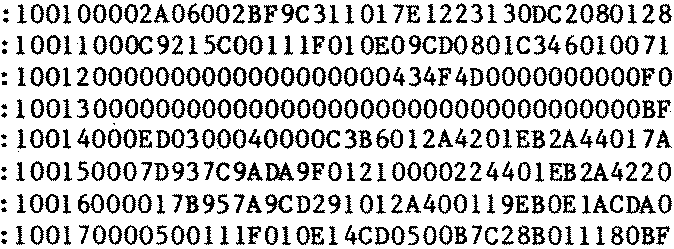
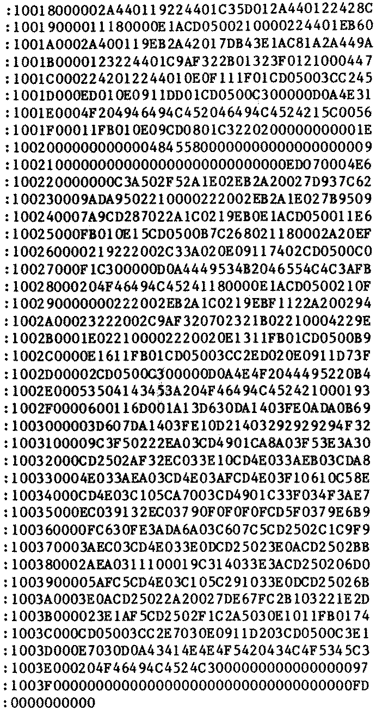

80-Bus News |
May–June 1984 · Volume 3 · Issue 3 |
| Page 33 of 51 |
|---|
Now I haven’t seen this one either and the code consists of a simple patch in the front of PIP. Once changed, this version of PIP can’t be used for anything else, so Arto’s suggestion is that the patched PIP be called IOPIP. The code came as a hard copy dump and wasn’t quite complete. Fortunately Arto also sent a disk with IOPIP.COM on it, so I disassembled it and then re-assembled it. I then checked the newly assembled code was the same as the code on disk, just in case. Now if you look at the patch area in PIP as supplied, you’ll see that there is the start jump, two fake RETs and a great wodge of bytes which read (INP:/OUT:SPACE). This routine neatly fits in this space with acres to spare, which now I know the space is there, I can think of a number of things which could be shoved in. Anyway, Arto’s source code is shown later.
All very simple and straight forward, this program should work with a direct wired connection or through a modem via the telephone, but there have to be snags. One problem is that you can not assume an 8-bit data transfer, some machines only have 7-bit serial I/O implemented, so transfering object code files is a problem. Apart from that Arto’s letter implies that the [0] option with PIP doesn’t work as the receiver can not see a ^Z under this option and therefore doesn’t know when the file is finished (I know this to be true, and the [B] option doesn’t work either). Hitting RESET does not close the file, so some or all the file will be lost. His suggestion is to transmit all files in HEX in the Intel HEX format and use the LOAD.COM program provided with CP/M to convert back it into a .COM file. This is alright if you have the CP/M User Group utility UNLOAD.COM which converts a file into Intel HEX format. If you haven’t tough!! Well perhaps not tough, just tough work, you see, I’ve just used UNLOAD to unload itself, so if you are really masochistic, you can sit down and type the following in using a word processor and then use LOAD to turn it into a .COM file. If you use Wordstar, do this in the non-document mode, otherwise you’ll have soft carriage returns, and that will probably upset LOAD.
 Well that just about sums it all up for this time. I’ll keep Arto’s article on switching between NASDOS and Nascom CP/M over until next time, so until next time have fun getting UNLOAD typed in.
| Page 33 of 51 |
|---|